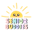

Anuj Mishra
Math + Business at  University of Waterloo and Wilfrid Laurier
University of Waterloo and Wilfrid Laurier
Currently
- Building an AI/ML product as its ML engineer, since Sep 2026
- Looking for S27 internships (May to August 2027)
What I've built
- SAR-Pulse maps surface-water change from NASA–ISRO radar. 1st at a local NASA Space Apps event and a global nominee
 Poltar scans a room with LiDAR and furnishes it in AR, an iOS app built in a day at UofTHacks Hack-or-Treat
Poltar scans a room with LiDAR and furnishes it in AR, an iOS app built in a day at UofTHacks Hack-or-Treat- Deep Orbit AI finds exoplanets in NASA data with 99.7% accuracy
- Co-founded
 myHighSchool.club, club websites for 10+ Ontario high schools
myHighSchool.club, club websites for 10+ Ontario high schools - Lead programmer for VEX robotics, our robot won the Skills Ontario Durham Regional
- TypeScript 43.2%
- Swift 35.1%
- Python 15.9%
- CSS 2.8%
- Other 2.9%
Volunteering
- Founded the Hindu Community Centre of Durham, recognized by Pickering and Ajax
- On the board of

Senior Buddies, connecting seniors and youth - Built and run the sites for both, plus
 Elimu Bright Schools, OFTAC and the Durham Diwali Festival
Elimu Bright Schools, OFTAC and the Durham Diwali Festival
Previously
- Taught robotics and coding at Zebra Robotics and IQ Brainers Academy
- Bronze in web design at Skills Ontario and 1st at Skills Durham (2026)
- 1st at the Ontario Tech × Sun Life CTF (2025) and 3rd at NASA Space Apps (2024)